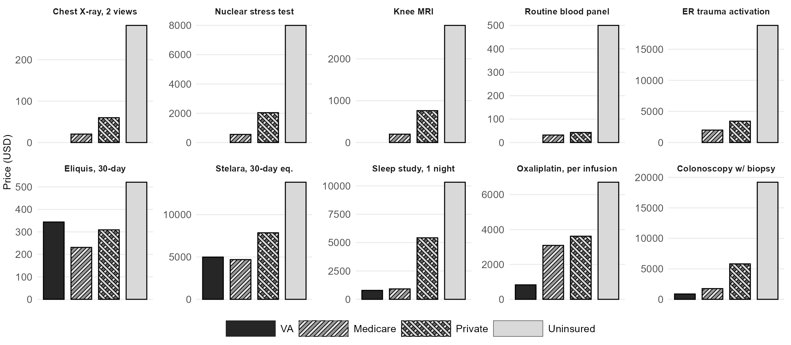

Sources and derivations for Figure 1 of One Drug, Many Prices: A Proposal to Reform US Healthcare Pricing. Back to overview.
The same drug, service, or procedure in the United States can cost substantially different amounts depending on the payer. This page documents every figure presented in Figure 1 of the note, with links to the original sources and notes on any derivations or assumptions.

Figure 1. Price gaps across payers for the same service or product. Solid dark bars represent the VA; diagonal stripes represent Medicare; crosshatch represents the private insurer (total negotiated rate, including patient cost-sharing); solid light gray represents the uninsured (chargemaster or list price). Each panel uses its own vertical scale.
How to read the sources
For each service, the four payer cells represent:
VA: what the Department of Veterans Affairs pays for the drug or service, either through Federal Supply Schedule pricing or as an internal cost at a VA facility.
Medicare: the Medicare allowed amount (fee schedule or negotiated rate under the Inflation Reduction Act).
Private insurer: the total negotiated rate between the insurer and the provider, which includes both the insurer's payment and the patient's cost-sharing (copay, coinsurance, deductible).
Uninsured: the chargemaster (list) price or equivalent retail price that a patient with no insurance is billed.
Expand any service below to view the full breakdown.
Pharmaceuticals
Eliquis (apixaban), 30-day supplyPharma
VA
$344 — Federal Supply Schedule price, March 2026.
Medicare
$231 — IRA Maximum Fair Price effective 2026.
Private insurer
$309 — Estimated US net price after rebates and discounts, from SSR Health data.
Uninsured
$521 — US list (WAC) price; the uninsured face the list price at retail pharmacy, since they have no access to the rebate channel.
$2.51 — VA Federal Supply Schedule price, March 2026.
Medicare
— Not separately reported.
Private insurer
— Not separately reported.
Uninsured
~$8.50 — Approximate current US list (WAC) price following Eli Lilly's roughly 70% list-price cut in late 2023 (from a pre-cut list of $32.18 per 100 units in 2019).
Assumption: The $8.50 figure is an approximation of the post-cut list price; Lilly cut the list price of Humalog by approximately 70% in Q4 2023, bringing a 10 mL (1000-unit) vial to roughly $82–$86, or about $8–$9 per 100 units.
~$25,000 — Derived. Median VA index-PCI admission cost from the CART Program registry (2008–2011 dollars), inflated to 2024 dollars using the medical-care CPI. Resource-intensive cases (such as four stents) likely run higher.
Medicare
— Not independently verified.
Private insurer
— Patient's case was billed out of network; no clean negotiated rate.
Uninsured
$164,941 — St. David's (Austin, TX) chargemaster total bill.
Derivation for VA: Bradley et al. (2015) reports a median 30-day total cost of $23,820 (2008–2011 VA data); the index PCI admission is 83% of that (~$19,800 in 2010 dollars); inflation-adjusted to 2024 dollars via the medical-care CPI (factor ≈ 1.51) gives ~$25,000 for the index admission.
~$880 — Derived. Median VA direct health-care cost per diagnostic colonoscopy in a single-center microcosting study (2002 dollars: $391), inflated to 2024 dollars using the medical-care CPI.
Medicare
$1,760 — Medicare rate reported in the KFF Bill of the Month article.
Private insurer
$5,816 — Aetna-negotiated rate after reducing the $19,206 chargemaster. Of this, Aetna paid $1,979 and the patient paid $4,047.
Uninsured
$19,206 — Northwestern Memorial chargemaster.
Derivation for VA: Medical-care CPI factor ≈ 2.25 from 2002 to 2024.
~$790 — Derived. VA-reported cost per in-laboratory polysomnogram (2015 dollars, priced at Medicare rates), inflated to 2024 dollars using the medical-care CPI.
Medicare
$920 — National Medicare rate reported in the KFF Bill of the Month article.
Private insurer
$5,419 — Humana's negotiated rate at Bascom Palmer (Miami); the patient owed $5,157 of the $10,322 total charge.
Uninsured
$10,322 — Total chargemaster bill.
Derivation for VA: Donovan et al. (2019) reports $663 per polysomnogram priced at Medicare rates from 2014–2016 VA data; medical-care CPI factor ≈ 1.19 from 2015 to 2024 yields ~$790.
~$2,000 — Approximate Medicare payment combining the trauma response code (G0390) and an emergency department E/M visit; the precise rate depends on the year's OPPS Addendum B and the specific E/M level.
Private insurer
$3,431 — Median commercial-payer negotiated price for trauma team activation, from a hospital price-transparency study.
Uninsured
$18,836 — Total bill for a 3-hour ER visit at Zuckerberg San Francisco General Hospital with no procedure performed. $15,666 of the bill was a single trauma-activation fee. The patient's travel insurance was capped at $5,000, so the chargemaster balance was billed to the family.
~$830 — Derived. Per-patient FOLFOX cost in a VA cost-effectiveness analysis (2008 VA internal costs, 12 biweekly infusions per 6-month regimen), inflated to 2024 dollars using the medical-care CPI. The figure combines the VA's in-house drug cost (FSS) with nursing, pharmacy, and overhead costs absorbed internally.
Medicare
$3,090 — Mean Medicare per-infusion payment in a national sample of cancer centers (Dusetzina 2016, 2012 dollars; current figures are likely higher).
Private insurer
$3,616 — Mean private-insurance per-infusion payment from the same source.
Uninsured
$6,711 — Mean uninsured-patient charge per infusion, same source.
Derivation for VA: Soni et al. (2014) reports a 6-month FOLFOX total cost of $6,427.61 in 2008 VA dollars across 12 biweekly cycles; per-infusion cost ≈ $535.63 in 2008 dollars; medical-care CPI factor ≈ 1.55 from 2008 to 2024 yields ~$830 per infusion.
The Medicare, private, and uninsured figures are all mean per-infusion payments from the same Dusetzina 2016 study and are therefore directly comparable. The VA figure uses internal cost accounting rather than a billed rate, since the VA is a closed system.
Prices in US healthcare are not standardized, and direct comparisons are imperfect by nature. The following points are worth keeping in mind.
Drug rows compare total amounts paid per unit of drug: VA FSS, Medicare negotiated (IRA), private-payer net of rebates, and uninsured list at retail.
Hospital and outpatient rows compare the total payment (or chargemaster) for the same underlying service. Where the private cell differs from the uninsured cell, the difference reflects the insurer's negotiated discount off the hospital's list price.
VA figures are drawn from peer-reviewed VA cost-effectiveness or activity-based cost studies, inflated to 2024 dollars using the medical-care CPI where necessary. The VA does not publicly release CPT-level unit costs the way Medicare does; HERC's detailed cost estimates are restricted to VA researchers.
Single-case anecdotes (e.g., specific hospitals named in journalistic investigations) are used when they are the only public window into what a real patient faced. Where possible, the figure also shows a population-level benchmark for the same service.
Approximation symbols (~) in the figure indicate a rounded or inflation-adjusted figure. All are documented above.